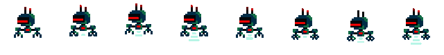

PhaserJS
Durant cette session, on va plus se concentrer sur la création de jeux vidéos dans le language JavaScript. Pour ce faire, on se servira de la librarie Phaser.
Durant cette session, on va plus se concentrer sur la création de jeux vidéos dans le language JavaScript. Pour ce faire, on se servira de la librarie Phaser.
Avant d'entamer ce défi, assure toi d'avoir déjà fait ceux ci:
Ensuite, assure-toi de te munir d'une grande motivation et soif d'apprendre!
Aussi, assure-toi que tu sois bien connecté à ton compte Repl.It, et que tu aies ton projet de la fois passée.
Souviens-toi ce que je vous ai promis après le premier cours: "On va ajouter des animations au cours suivant". Aujourd'hui ce sera enfin le cas!
Pour pouvoir faire des animations il te faut plusieurs versions de ton joueur. Pour l'instant, on va créer une animation de personnage qui marche. Fais donc quelques pixelarts différents où les pieds bougent peu à peu.
Dans ReplIt, tu peux alors créer un dossier qui s'appelle "player". Dans celui ci, ajoute tous les dessins du joueur.
Il nous faut alors load tous les costumes du joueur. Dans la fonction preload, tu peux les load un à un en tant que "player-XY" (Change le XY par un numéro à chaque fois!).
this.load.image("player-XY", "player/NOM_DU_COSTUME.png");
Maintenant qu'on a load toutes les parties de l'animation, on doit encore créer l'animation. Cela va se passer dans la fonction create, après avvoir défini this.player.
this.anims.create({
key: "player_walk",
frames: [
{key:"player-01"},
{key:"player-02"},
{key:"player-03"},
{key:"player-04"},
{key:"player-05"},
{key:"player-06"},
{key:"player-07"},
{key:"player-08"}
],
frameRate: 10
});
Regardons ce code de plus près:
key est simplement le nom de l'animation, tu peux l'appeller comme tu veux mais fais en sorte que tu t'en souviennes.key dans les frames est le nom du costume à ce moment là. Fais en sorte de les mettre dans le bon ordre!framerate représente la vitesse de ton animation. Tu pourra jouer avec une fois qu'on a ajouté l'animation dans le jeu.Maintenant il ne manque plus que d'activer notre animation. Rien de plus facile. Lorsque tu marches, donc lorsque tu changes la VelocityY du joueur, tu veux ajouter ce code:
this.player.anims.play("player_walk", true);
Et voilà! Lorsque tu marches, ton joueur marche avec toi!
Tu remarques surement un problème lorsque tu sautes. En effet, on aimerait peut-être jouer une autre animation lorsque tu sautes. L'animation que je te propose est comme suit:
Tout d'abord, il faut dessiner ces costumes supplémentaires, les ajouter dans le ReplIt et les load dans to code.
Ensuite, il faut créer deux animations, une pour monter et une pour descendre. Une animation peut être composée d'un seul costume si tu le souhaites.
this.anims.create({
key: "player_up",
frames: [
{key:"player-09"}
],
frameRate: 10
});
this.anims.create({
key: "player_down",
frames: [
{key:"player-10"}
],
frameRate: 10
});
Maintenant, on veut activer ces animations lorsqu'on monte ou descend. Dans la fonction update, on va vérifier si on monte ou si on descend.
if (this.player.body.velocity.y > 0) {
// Regarder vers le bas
}
if (this.player.body.velocity.y < 0) {
// Regarder vers le haut
}
if (this.player.body.velocity.y === 0) {
// Marcher
}
Maintenant ton personnage va marcher que s'il ne monte ou tombe pas, et sinon il va regarder dans la direction où il se dirige. Super non?
Maintenant que tu sais à quel point c'est facile de faire une animation, tu peux en ajouter partout!